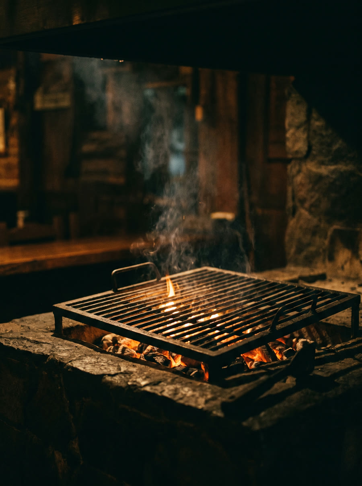
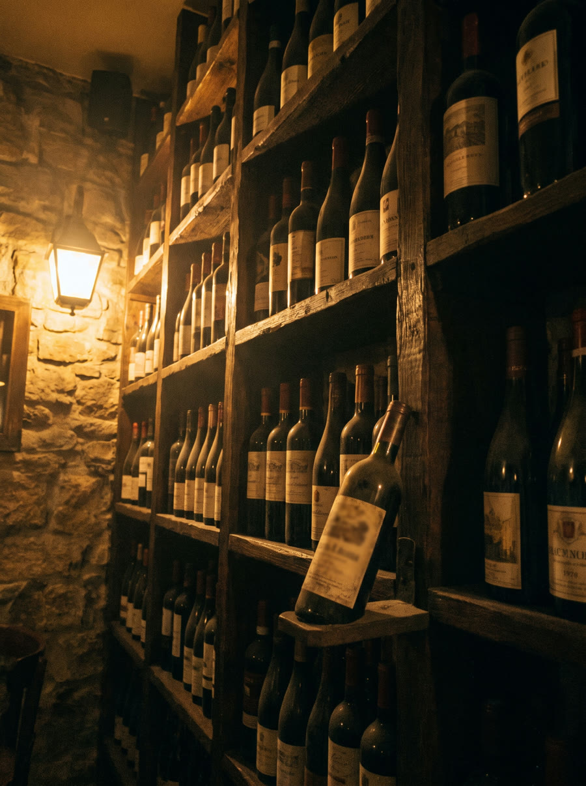
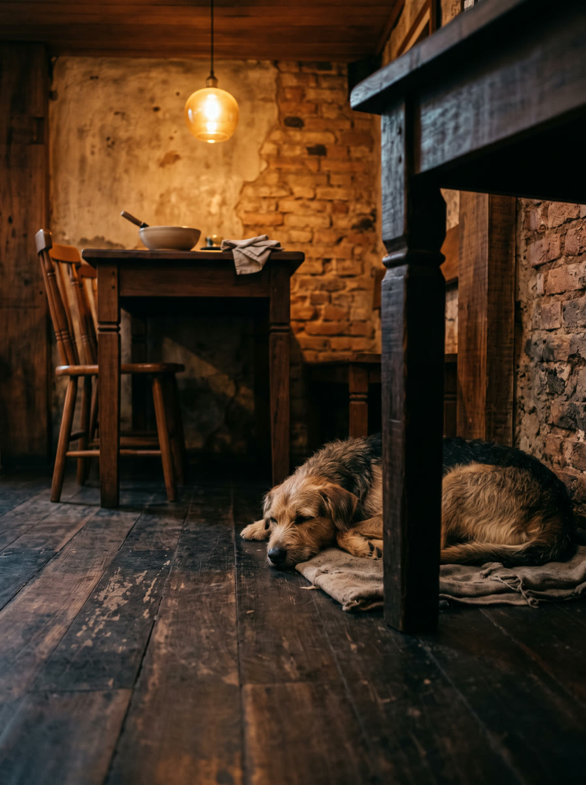

Fogo baixo, vinho aberto.
Uma parrilla com sotaque de bar de esquina.
Na Venâncio Aires, 831, o Gracejo mistura o ritual da parrilla (brasa baixa, cortes generosos, pão de alho que não sobra na mesa) com a informalidade de um bom bar de bairro.
É o tipo de casa em que se senta às 17h para um aperitivo e se fica até depois da meia-noite, porque sempre surge mais um vinho, mais uma história, mais um gracejo. Cães são bem-vindos, e costumam ficar tão à vontade quanto os donos.
“O pão de alho é impossível de parar de comer.”
— cliente, Tripadvisor

BairroCidade Baixa
CozinhaParrilla
Pet friendlySim
ReservasVia Instagram
O que sai da brasa — e da adega.
Seis frentes, uma só cozinha: da parrilla ao vinho, pensadas para ficar na mesa a noite toda.
O clima que a gente persegue.
Imagens geradas para mostrar a atmosfera da casa até a galeria real entrar na versão final.
Fogo baixo, brasa lenta

Adega sempre aberta
Cães bem-vindos à mesaO dia a dia real da casa (sem filtro de IA) está sempre no Instagram.
Seguir @gracejo831_ →Quando e onde a brasa está acesa.
| Segunda-feira | Fechado |
| Terça a sexta | 17h–23h59 |
| Sábado | 11h–23h59 |
| Domingo e feriados | 11h–23h59 |